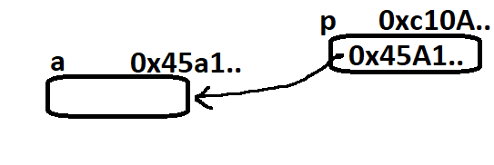
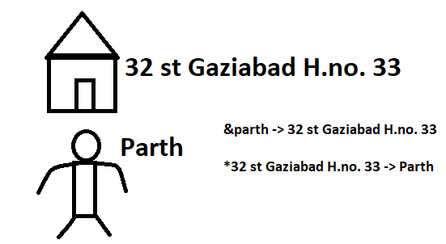
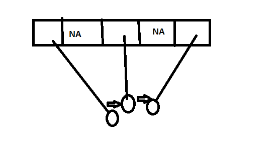

What are pointers?
- Variable which stores the address of another variable
- Can be of type int, char, array, function or any other pointer.
- Size depends on the architecture. Ex→ 2 bytes for 32 bit
- Pointer in C programming language can be declared using * (asterisk symbol)
Explanation

- a is in integer variable
- p is a pointer to integer
'&' , '*' and '->' operators
- The addresss of operator '&' returns the address of a variable
- '*' is the dereference operator (also called indirection operator) used to get the value of a given address.
- '->' is the arrow operator which is used to get value from structure which is declared as a pointer.

Code
int a = 76;
int *ptra = &a;
printf("The address of a is %p", ptra);
//%p → no. in hexadecimal, so as address are in hexadecimal value.
printf("The value of a is %d",*ptra);
NULL pointer
- A pointer that is not assigned any value but NULL is known as the NULL pointer
- In computer programming a null pointer is a pointer that does not point to any abject or function
- We can use it to initialize a pointer variable when that pointer variable isn't assigned any valid memeory address yet.
- int *ptr = NULL;
int ptr2;
printf("%p",ptr2); //62374678 garbage value
int *ptr2 = NULL:
printf("%p",ptr2); //0000000
Use of pointer

Want to use these three but we can't use array instead we can make link list and using node we can point address of each other then we can do traversing and searching.
- Dynamic memory allocation → Freeing or relocating memory in run time.
- Arrays, functions and structures
- Return multiple values from a function
- Pointer reduces the code and improves the performance.